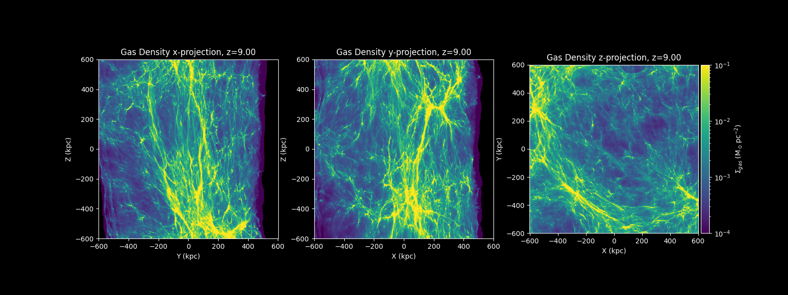

CASCA Talk, June 2025
-

CASCA TALK
JUNE 5, 2025Title: Beyond the First Light: Novel Simulations of Pop III Stars with PeakPatch-GIZMO Pipeline
Abstract: Recent observations with JWST have successfully identified galaxies at high redshifts ($ z \gtrsim 13$), yet the Initial Mass Function (IMF) of the Universe's first stars, known as Population III (Pop III) stars, remains poorly constrained. Addressing this gap, our work employs a novel numerical strategy utilizing the Meshless Finite Mass (MFM) method within the GIZMO simulation framework to study Pop III star formation with an unprecedented level of detail. This method surpasses previous methods used in such studies by offering improved accuracy in modeling accretion disks and high-density regions, crucial for understanding the early universe's star formation processes. Incorporating the STARFORGE module enables a prediction of the IMF, a critical advancement for studying Pop III stars. Furthermore, the implementation of particle splitting and zoom-in techniques facilitates the resolution of individual stars from initial conditions (ICs) derived from the Cosmic Microwave Background (CMB) on megaparsec scales. The goal of our initial efforts is to improve our understanding of the physics of high-redshift star formation, revealing new insights into the formation mechanisms and structural properties of Pop III stars.
Download PDF